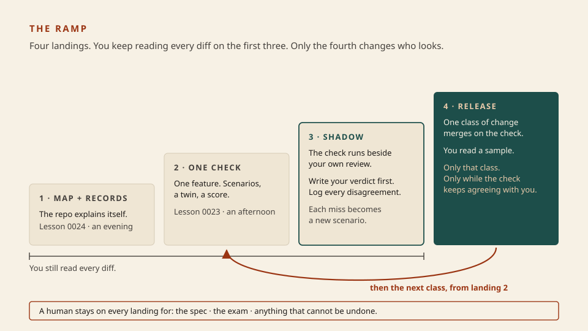
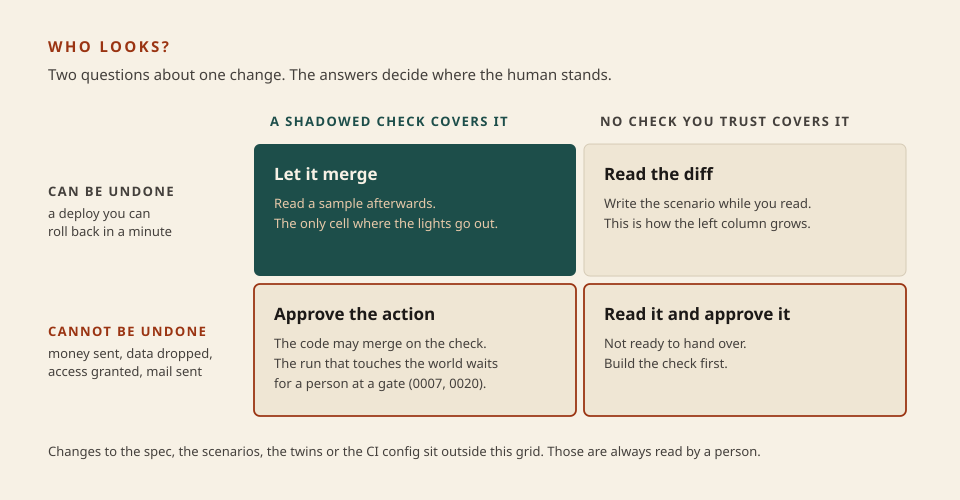

Software factory
The ramp
You have the parts: the test for a real factory (0022), a check the builder cannot see (0023), a repo the builder can read (0024). What is left is the order to build them in and the one decision that actually changes how you work: when to stop reading the diff. The answer is never “now, for everything.” You stop reading one class of change at a time, and only after the check has spent a while agreeing with your eyes.
What this is. A way up Shapiro’s ladder that one developer can afford and a team can govern: four landings, a log that tells you when to step up, a budget cap, and a list of what stays with a person. The shadow log is my synthesis. It applies to code what 0019 taught about calibrating a judge, and it follows how Anthropic’s harness team tuned their evaluator: by reading its logs for places where its verdict differed from the author’s own. Harness design for long-running apps
What this is not. A route to level 5 for everything you ship. Most code never should get there, and most teams should stop at a landing. It is also not a method for a ten-year-old codebase. Every first-hand report I could find started from an empty repository, and I have no high-trust source for the other case. The landings still apply; the effort to reach the first two will be larger and nobody has published by how much.
- 1 · ShadowThe check runs beside your review. Log disagreements.
- 2 · ReleaseOne class of change: covered, and undoable.
- 3 · KeepThe spec, the exam, the irreversible stay human.
The lights go out last (0022), and one room at a time.

Architecture first. Landings 1 and 2 are the last two lessons. Tonight is 3 and 4.
Three moves
- Shadow For a run of agent changes in one area, review each as you do today, write down merge or reject, and only then look at what the check said. You are not testing the agent. You are testing whether the check sees what you see.
- Release When the check has stopped missing things you catch, let that one class of change merge on the check and read a sample instead of all of it. A class is narrow: “changes to refund logic,” not “the backend.” Trust earned on one class says nothing about the next.
- Keep Three things do not move down the ramp: what the software should do, the exam that decides whether it does, and any action in the world that cannot be taken back.
Shadow log · refund logic · 20 agent changes · numbers invented for illustration
check PASS check FAIL
you would merge 13 1
you would reject 2 4
agreement: 17 of 20
THE CELL THAT MATTERS: you reject, check passes (2)
#7 the refund was issued twice when the request was retried
-> new scenario: "the same request arrives twice"
#15 right amount, wrong currency on the refund
-> the twin now records currency; the judge compares it
re-run all 20 with the two additions: that cell is 0
the other odd cell: you merge, check fails (1)
#11 you missed a monthly plan being refunded. The check was right.
What this shows. Seventeen of twenty sounds like a good check. It is not the number to read. The two changes in the bottom-left cell are what would have shipped had the lights been off, so each one becomes a scenario or a field the twin records, and the run is repeated. The top-right cell is worth a look for the opposite reason: sometimes the check is too strict, and sometimes, as with #11, it caught what you did not. You step up when the bottom-left cell stays empty across a run long enough that you believe it. I have no sourced number for how long that is; pick one before you start so you cannot talk yourself into stopping early.
What may go, and what may not
Releasing a class needs two things to be true of it, not one. The check covers it, and a mistake in it can be undone.

My synthesis, not a quoted source. The bottom row is the allow gate from 0007 and 0020, placed on the action and not on the code.
Skill: decide who looks
Six changes arrive in the billing assistant’s queue. Refund logic has been shadowed and released. Nothing else has.
Merge, approve, or read?
The bill, and a cap on it
The check costs more than the build. That is the consistent finding in the reports, and the reason to release narrow classes instead of buying a factory.
- Anthropic’s harness team ran the same one-line prompt two ways: one agent alone, 20 minutes and $9; planner, builder and evaluator together, 6 hours and $200. The cheap run’s main feature did not work. A later, slimmer harness on a newer model cost about $124, of which the evaluator’s three passes were about $10.
- Carlini’s compiler took about two weeks of sixteen agents and just under $20,000.
- StrongDM’s benchmark is $1,000 of tokens per engineer per day. Simon Willison’s response is the one to keep: at $20,000 a month per engineer this is a business-model question, and he hopes the patterns work at far lower spend. He experiments on a $200-a-month plan. Willison
Two habits keep the bill honest. First, the same team found an evaluator earns its cost only where the task is beyond what the model does reliably alone, and that each piece of a harness stands for something the model could not do when you added it. When the model changes, take pieces out one at a time and see what breaks. Second, give every unattended run a ceiling. You wrote one in 0021 as maxTurns. Claude Code’s non-interactive mode has the same cap and a dollar one:
claude -p --max-turns 30 --max-budget-usd 5 "Fix the failing refund scenario"
The docs note that the dollar cap is checked against a client-side estimate that can differ from the bill. This line is here to show the shape. It makes paid calls, so it is not something to run in this course. Claude Code · CLI reference
Where a human stays
- The spec. In the OpenAI report, people prioritise the work, turn user feedback into acceptance criteria and validate outcomes. The agent escalates when judgment is needed. Nobody has automated deciding what should be built.
- The exam. Scenarios, twins, the judge, the CI config. A Stanford Law commentary on StrongDM names the risk when an LLM also does the judging: builder and inspector can share blind spots, and the difference between them is what made testing useful. Someone who is not the builder owns the exam. Kahana · Stanford CodeX
- The irreversible. Money, deletion, access, anything sent to a customer.
- The name on it. The same commentary: “Existing legal frameworks assume someone, somewhere, looked at the work.” Liability, what to disclose to a customer, and warranty terms have not caught up. Until they do, every released class needs a named person who answers for it, and you should know what your contracts say about review before you stop doing it.
- The skill. The commentary also warns that as scrutiny fades, so does the ability to catch a serious failure. Carlini, a former penetration tester, ends his own report uneasy about software nobody personally verified. The sample you keep reading is how you stay able to read.
Solo developer
One repo, one feature, one class. A map, six scenarios and a twin. Shadow twenty changes on a notepad. Release that class with a turn cap. Reaching landing 4 for a single class is a real result. Stay there as long as you like.
Team
A written list of released classes, each with an owner, its check, and the date it was last shadowed. Scenarios live where builders cannot push. A budget per person. Re-shadow after a model change. Legal reads the list before customers rely on it.
After this
The section ends here. The ramp’s first two landings are waiting in code/: the lint from 0024 and the check from 0023. Or build track 2, the allow gate that the bottom row of the grid depends on.
Your ramp, this week
No new code tonight. Three exercises are open, and they are the ramp in order of value. Pick one.
cd code/0023-a-check-the-builder-cannot-see landing 2: the check node check.ts cd code/0024-a-rule-that-teaches landing 1: a rule in the repo node check.ts cd code/0021-write-the-loop the loop every agent runs on node check.ts
Then, for something of your own: name one class of change in a repository you work in, write down the two or three things you look for when you review it, and send me the list. Those are your first scenarios.
Parked: many agents in parallel, task locks and worktrees; LLM judges for outcomes code cannot grade, and why they bring the shared-blind-spot problem with them; running each scenario several times so the score is a rate; factories on old codebases, where I have no source worth teaching from yet.
Check
From memory.
Primary source. Harness design for long-running application development, by Prithvi Rajasekaran. Read the cost tables, the passage on how the evaluator was tuned against the author’s own judgment, and the section on removing harness pieces after a model upgrade. It is a vendor report on its own models, with the limits stated. Then, for the half engineers skip, Built by Agents, Tested by Agents, Trusted by Whom?
Wisdom lives with people doing this. Simon Willison’s coding-agents posts and the discussions they link to are the most candid running record I know of; read the disagreements, not only the posts.
Card: software factory (now with the ramp). Calibrating a judge: 0019. The gate: 0020.